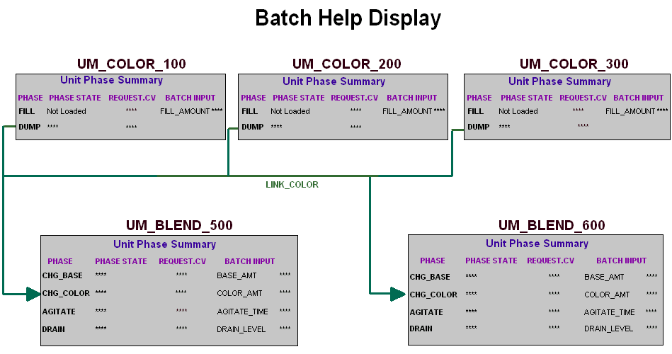
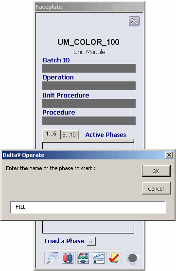
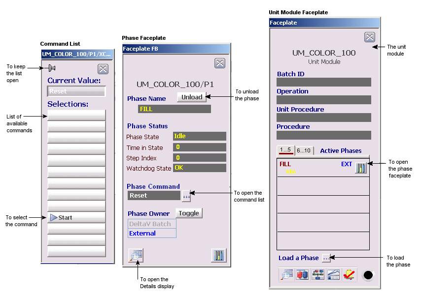

Open the Batch graphic by clicking the
Open folder button
and selecting
Batch from the list of graphics available.
(Click
Skip All for any messages warning about
parameters not being configured, since we haven't configured many of the unit
modules referenced in this graphic.)
The Batch graphic opens.

Click the name UM_COLOR_100 to select the unit module and open the
faceplate.
Click the button next to
Load a Phase at the bottom of the faceplate.
Enter the phase name FILL (all uppercase) in the dialog.

When the phase has been loaded, it is listed under Active Phases
on the unit module faceplate.
Click the
Faceplate button next to the phase name FILL
to open the phase faceplate.
The phase is listed as UM_COLOR_100/P1 on the faceplate title,
meaning it is the first active phase loaded. Note that the phase owner is
listed as External.
Click the button next to
Phase Command to open the list of phase
commands that are valid for the current state. Click the
Pushpin button at the top left of the command
list to keep the list open.
Note: The
Pushpin button appears when multiple
faceplate capability has been enabled in UserSettings.grf. When multiple
monitor capability has been enabled, a display selector appears to the right of
the
Pushpin button.

Click the
Process Graphic button at the top of the
graphic to replace the Batch picture with the Process picture. Click
Skip All on any warning messages.
 and selecting
Batch from the list of graphics available.
(Click
Skip All for any messages warning about
parameters not being configured, since we haven't configured many of the unit
modules referenced in this graphic.)
The Batch graphic opens.
and selecting
Batch from the list of graphics available.
(Click
Skip All for any messages warning about
parameters not being configured, since we haven't configured many of the unit
modules referenced in this graphic.)
The Batch graphic opens.